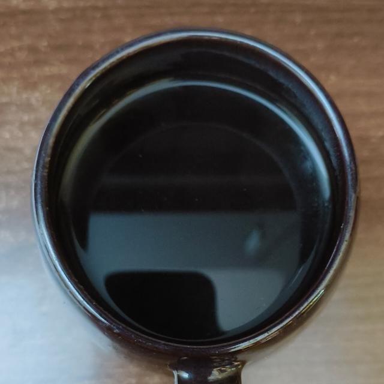

Coffee with a French Press!

Description
The French Press is a time-tested technique of brewing coffee. Incredibly forgiving, it provides a rich, deep cup with good extraction.
The recipe provided here is slightly unorthodox (James Hoffman's method), but is easy to reproduce and reliably produces a good cup of coffee. While most recipes call for coarse ground coffee, this one calls for medium to medium-coarse. Please keep in mind the approximate ratio of 16 ml water to 1 gram coffee, however, you may change this as you see fit.
Ingredients
- Coffee grounds - Medium to medium-coarse (Preferably freshly ground!)
- Water
- French Press
Steps
- Add grounds to the French Press.
- Add boiling hot water.
- Stir once, then stir again after 20 seconds. Lighter the roast, the more vigorous the stirring.
- Scoop the gunk off the top with a spoon or two.
- Wait 5 minutes
- Put the lid on the press, and lower the plunger only to the top of the coffee being brewed.
- Wait 5 or more minutes. Read the newspaper. Or listen to some music.
- Pour and enjoy.
Home